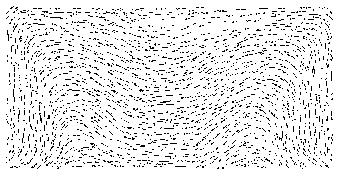

I have great interest in Numerical Methods and Applications of Partial Differential Equation in computing materials, especially for the micromagnetics.
I'm also interested in the Numerical Methods and Applications of Density Functional Theory, such as the molecular dynamics simulation, electronic structure calculations etc., .
The Machine Learning Theory and Applications with high dimensional PDEs is quite significant project that I follow up.
My research projects involve the following aspects:
Numerical Methods and Analysis For Partial Differential Equation
Micomagnetics Simulations
Machine Learning and It's Applications to Solve the High Dimensional PDEs
Optimal Transport
Deep Learning
Optimization on the Micromagnetics
Multiscale Methods of Elliptic Problems
Molecular Dynamics Simulations
Algorithms on the Electronic Structure Calculations
Material parameters (To mimic permalloy): Exchange constant A = 1.3e-11 J/m, Saturation magnetization M = 8.0e5 A/m, Anisotropy constant K = 500 J/m^3
Fig.2-Problem 1 Setup
du96a
Fig.3-Remanent Magnetization Profile. Left: Remanent state after saturation along the long axis;
Right: Remanent state after saturation along the short axis (both are rotated ccw 90°).
Fig.4-Hysteresis Loops. (note: Initial state (uniform/random/canted): uniform positive saturation magnetization;
Number of field states calculated (including +/-50 mT (+/-500 Oe)): 396; Canting angle of applied field from nominal axis (degrees): +1;
Direct Demag calculation.)
fr96a
Fig.5-Remanent Magnetization Profile. Left: Remanent state after saturation along the long axis;
Right: Remanent state after saturation along the short axis (both are rotated ccw 90°).
Fig.6-Hysteresis Loops. (note: Initial state (uniform/random/canted): uniform positive saturation magnetization;
Number of field states calculated (including +/-50 mT (+/-500 Oe)): 396; Canting angle of applied field from nominal axis (degrees): +1;
Direct Demag calculation.)
lu96a
Fig.7-Remanent Magnetization Profile. Left: Remanent state after saturation along the long axis;
Right: Remanent state after saturation along the short axis (both are rotated ccw 90°).
Fig.8-Hysteresis Loops. (note: Initial state (uniform/random/canted): uniform;
Number of field states calculated (including +/-50 mT (+/-500 Oe)): 123; Canting angle of applied field from nominal axis (degrees): 1 and 89 degrees;
Truncation of magnetostatic interaction range.)
mo96a
Fig.9-Remanent Magnetization Profile. Left: Remanent state after saturation along the long axis;
Right: Remanent state after saturation along the short axis (both are rotated ccw 90°).
Fig.10-Hysteresis Loops. (note: Initial state (uniform/random/canted): uniform;
Number of field states calculated (inc. +/-50 mT) for x-loop/y-loop: 133/133; Canting angle of applied field from nominal axis (degrees): +1;
FFT Demag calculation.)
ts96a

Remanent Magnetization Profile. Left: Remanent state after saturation along the long axis;
Right: Remanent state after saturation along the short axis (both are rotated ccw 90°).
Hysteresis Loops. (note: Initial state (uniform/random/canted): uniform;
Number of field states calculated (including +/-50 mT (+/-500 Oe)): 241 x 2 loops; Canting angle of applied field from nominal axis (degrees): 1;
matrix calculation of potential from divM for Demag calculation.)
ts96b
Remanent Magnetization Profile. Left: Remanent state after saturation along the long axis;
Right: Remanent state after saturation along the short axis (both are rotated ccw 90°).
Hysteresis Loops. (note: Initial state (uniform/random/canted): uniform;
Number of field states calculated (including +/-50 mT (+/-500 Oe)): 265; Canting angle of applied field from nominal axis (degrees): 1;
matrix calculation of potential from divM for Demag calculation.)
pb97a
Remanent Magnetization Profile. Left: Remanent state after saturation along the long axis;
Right: Remanent state after saturation along the short axis (both are rotated ccw 90°).
Hysteresis Loops. (note: Initial state (uniform/random/canted): random;
Number of field states calculated (inc. +/-50 mT) for x-loop/y-loop: 100; Canting angle of applied field from nominal axis (degrees): 1;
FFT Demag calculation; Solver method : Energy min./Conj. grad; Solver stopping criteria: MAX{torque}< 1.0e-4.)
zn97a
Remanent Magnetization Profile. Left: Remanent state after saturation along the long axis;
Right: Remanent state after saturation along the short axis (both are rotated ccw 90°).
Hysteresis Loops. (note: Initial state (uniform/random/canted): random;
Number of field states calculated (inc. +/-50 mT) for x-loop/y-loop: 201; Canting angle of applied field from nominal axis (degrees): 1 (2 for y-loop);
vector potential, spatial transf. for Demag calculation; Solver method: Energy min./Conj. grad.)
problem 2 Setup
Geometry. (Take a thin film of thickness t, width d, and length L. We suggest to make the problem virtually 2D by choosing
t/d = 0.1, and to obtain interesting non-uniform reversal modes, L/d = 5.)
This standard micromagnetic problem includes both magnetostatic and exchange energies, but has the advantage of only one scaled parameter.
If crystalline anisotropy is neglected and the geometry is fixed, scaling of the static micromagnetic equations (Brown's equations)
yield a hysteresis loop which depends only on the scaled geometry to the exchange length when expressed as M/M_s versus
H/H_m, where H_m = M_s (SI) or 4\pi M_s(cgs emu). The exchange length is
\ell_{ex} = (A/Km)^{1/2}, where A is the exchange stiffness constant and K_m
is a magnetostatic energy density, K_m=1/(2\mu_0 M_s^2) (SI) or 2\pi M_s^2 (cgs emu).
The field should be applied in the [1,1,1] direction, approximately 54.74 degrees ( \arccos(1/\sqrt(3)) )
from each of the coordinate axes.
This field orientation is chosen to avoid potential symmetry breaking problems.
Material parameters: 1) The magnetostatic exchange length \ell_{ex}; 2) Zero magnetocrystalline anisotropy.
Desired output for comparison: Calculated as a function of d/\ell_{ex}, with aspect ratios held constant at t/d = 0.1
and L/d = 5.0: 1) Coercivity (H_c/H_m, the magnitude of the field at which the projection of the magnetization along the field,
Mx+ My+ Mz is zero); 2) Remanence ( M_x/M_s, M_y/M_s, M_z/M_s, at H=0 )
Comments: 1) If we all begin with d/\ell_{ex}=0.1 then the film will switch in the plane uniformly with the Stoner-Wohlfarth result for the coercivity.
2) As we increase d/\ell_{ex}, say to d/\ell_{ex}=2, simple nonuniform rotation will occur. 3)
For d/\ell_{ex}>2 complex vortex formation will begin to occur and both the remanence and coercivity will become very small.
Also, eventually non uniform magnetization over the film thickness will occur. We all should agree when d/\ell_{ex}=0.1,
but it will be interesting to see as we increase d/lex when our results diverge.
Result Comparison which compare independently calculated values of the remanent magnetization and coercivity over a range of d/\ell_{ex}.
(from top to bottom and left to right: 1) Remanent magnetization along the long axis of the particle as a function of d/\ell_{ex};
2) Remanent magnetization along the short axis of the particle as a function of d/\ell_{ex}; 3) Coercivity for fields applied along the (111) direction as a function of d/\ell_{ex}. )
Reference: 1) B. Streibl, T. Schrefl and J. Fidler, J. Appl. Phys, v. 85, pp 5819-5821 (1999), 10.1063/1.369930.
2) R. D. McMichael, M. J. Donahue, D. G. Porter and Jason Eicke, J. Appl. Phys, v. 85, pp 5816-5818 (1999), 10.1063/1.369929.
3) L. Lopez-Diaz, O. Alejos, L. Torres and J. I. Iniguez J. Appl. Phys, v. 85, pp 5813-5815 (1999), 10.1063/1.369928.
4) M. J. Donahue, D. G. Porter, R. D. McMichael, J. Appl. Phys, .v 87, pp. 5520-5522 (2000), 10.1063/1.373391.
problem 3 Setup
Geometry: A cube with edge length, L, expressed in units of the intrinsic length scale, \ell_{ex}=(A/K_m)^{1/2},
where K_m = 1/(2\mu_0 M_s)^2 is a magnetostatic energy density
This problem is to calculate the single domain limit of a cubic magnetic particle. This is the size L of equal energy for the so-called
flower state (which one may also call a splayed state or a modified single-domain state) on the one hand, and the vortex or curling state on the other hand.
Material parameters: Uniaxial anisotropy K_u with K_u=0.1 K_m and with the easy axis directed parallel to a principal axis of the cube.
What we need to compare: 1) The indicated "single domain limit," L where the energy of the flower state is equal to the energy of the vortex state.
2) The partial energies (exchange, stray field, anisotropy) all in units of K_m.
3) The average magnetization along the three axes.
Reference: 1) Magnetic states of small cubic particles with uniaxial anisotropy, W. Rave, K. Fabian, A. Hubert, Journal of Magnetism and Magnetic Materials 190 (1998).
10.1016/S0304-8853(98)00328-X
problem 4 Setup
Geometry.
Standard problem #4 is focused on dynamic aspects of micromagnetic computations.
The initial state is an equilibrium s-state such as is obtained after applying and slowly reducing a saturating field along the [1,1,1] direction to zero.
Fields of magnitude sufficient to reverse the magnetization of the rectangle are applied to this initial state and the time evolution of the magnetization
as the system moves towards equilibrium in the new fields are examined. The problem will be run for two different applied fields.
The problem was chosen so that resolving the dynamics should easier for the 170 degree applied field than the 190 degree applied field.
Preliminary simulations reveal that, in the case of the field applied at 170 degrees, the magnetization in the center of the rectangle rotates in the same
direction as at the ends during reversal. In the 190 degree case, however, the center rotates the opposite direction as the ends resulting in a more complicated reversal.
The field amplitudes were chosen to be about 1.5 times the coercivity in each case.
Material parameters (Similar to Permalloy): A = 1.3e-11 J/m (1.3e-6 erg/cm), Ms = 8.0e5 A/m (800 emu/cc), K = 0.0
Model Equation: The dynamics, calculated either using the Landau-Lifshitz equation,
\frac{dM}{dt}=-\gamma_0^{\prime}M \times H_{eff}-\frac{\lambda}{M_s} M \times (M\times H_{eff}),
or the Gilbert equation,
\frac{dM}{dt}=-\gamma_0 M \times H_{eff}-\frac{\alpha}{M_s} M \times \frac{dM}{dt},
will use parameters: \alpha=0.02, \gamma_0^{\prime}=2.21\times10^{5} M/M_s, \gamma_0=2.211\times 10^5 M/M_s, \lambda=4.42\times 10^3 M/M_s, with the quantity
\gamma_0^{\prime}=\frac{\gamma_0}{1+\alpha^2}, \quad \lambda = \frac{\gamma_0 \alpha}{1+\alpha^2}.
Applied Fields: Two switching events will be calculated using fields applied in the x-y plane of different magnitude and direction.
Field 1: µ_0 H_x=-24.6 mT, µ_0 H_y= 4.3 mT, µ_0 H_z= 0.0 mT which is a field approximately 25 mT, directed 170 degrees counterclockwise from the positive x axis
Field 2: µ_0 H_x=-35.5 mT, µ_0 H_y=-6.3 mT, µ_0 H_z= 0.0 mT which is a field approximately 36 mT, directed 190 degrees counterclockwise from the positive x axis
Each field will be applied instantaneously at t=0 to the equilibrium s-state.
What we need to compare:
The (x,y,z) components of the spatially averaged magnetization of the sample as a function of time from t=0 until the sample reaches equilibrium in the new field;
An image of the magnetization at the time when the x-component of the spatially averaged magnetization first crosses zero
Plots of the My data highlight differences: 1) Field 1, 170° from x-axis;
2) Field 2, 190° from x-axis; 3) Field 2, 190° from x-axis, showing detail in the time range where the solutions begin to diverge.)
Reference: 1) G.Albuquerque, J.Miltat and A.Thiaville, IMACS 2000 World Congress Proceedings
2) G.Albuquerque, J.Miltat and A.Thiaville, Joint MMM-Intermag Conference 2001 (presentation)
3) L. D. Buda, I. L. Prejbeanu, M. Demand, U. Ebels and K. Ounadjela, The 8th Joint MMM-Intermag Conference 2001 Proceedings
4) M.E. Schabes and A. Aharoni, Magnetostatic Interaction Fields for a Three-Dimensional Array of Ferromagnetic Cubes, IEEE Transactions on Magnetics 23, n. 6 (1987), 3882-3888.
10.1109/TMAG.1987.1065775
5) M. d’Aquino, C. Serpico, G. Miano, Geometrical integration of Landau-Lifshitz-Gilbert equation based on the mid-point rule, Journal of Computational Physics 209 (2005), 730-753.
10.1063/1.1858784
problem 5 Setup
This problem serves as a test of proper basic functioning of those micromagnetic solvers that include the effects of spin momentum
transfer between in-plane polarized current and spatial patterns of magnetism. The movement of a magnetic vortex in response to a constant
current flowing in the plane of magnetic material is computed. The final vortex position and its trajectory serve as results to be compared among different solvers.
The problem is to be solved for a sequence of values for the degree of non-adiabaticity to detect any divergence of results among solvers over the range.
Geometry
A rectangular film of magnetic material with dimensions 100 nm × 100 nm × 10 nm, aligned with the x,y,z axes of a Cartesian coordinate system, with origin at the center of the film.
Material Parameters (Similar to Permalloy): Saturation magnetization M_s=8.0e5 A/m; Exchange constant: A=1.3e-11 J/m; Anisotropy energy density: K=0 J/m^3;
Gilbert damping parameter: \alpha=0.1; Gilbert gyromagnetic ratio: \gamma_0=2.211e5 m/C
Initial State setup: At each point (x,y,z) within the magnetic material, set the initial magnetization direction so that m=M/M_s=f/|f|, where f(x,y,z)=[-y,x,R]^T and R=10 nm
From that initial state, solve the Landau-Lifshitz-Gilbert dynamics:
\frac{dm}{dt}=-\gamma_0 m \times H+\alpha m \times \frac{dm}{dt},
to reach an equilibrium configuration. This magnetization vortex pattern is the initial state for all the remaining simulations.
Applied Current: To the initial magnetization vortex pattern, an in-plane current is applied in the x direction,
with the product of the polarization rate P and current density J given by PJ=10^{12}\hat{x} in units of A/m2, where \hat{x} is the unit vector in the positive x direction.
Boundary Conditions: Outside of the magnetic material, the applied current is unpolarized. This places conditions on the boundaries where current enters and leaves the magnetic material.
At those surfaces care must be taken with the calculation such that the applied current delivers zero spin torque to the magnetization there.
Spin Torque Dynamics Reference: 1) Proposal for a standard problem for micromagnetic simulations including spin-transfer torque, M. Najafi, B. Krüger, S. Bohlens, M. Franchin, H. Fangohr, A. Vanhaverbeke,
R. Allenspach, M. Bolte, U. Merkt, D. Pfannkuche, D.P.F. Möller, and G. Meier, Journal of Applied Physics, 105, 113914 (8 pages) (Jun 2009). 10.1063/1.3126702
2) Micromagnetic understanding of current-driven domain wall motion in patterned nanowires, A. Thiaville, Y. Nakatani, J. Miltat, Y. Suzuki,
Europhysics Letters, 69, 990 (7 pages) (March 2005). 10.1209/epl/i2004-10452-6
3) Roles of nonequilibrium conduction electrons on the magnetization dynamics of ferromagnets, S. Zhang and Z. Li, Physical Review Letters, 93, 127204 (4 pages) (September 2004).
10.1103/PhysRevLett.93.127204
The model equation may be reconciled into a common form:
\frac{dm}{dt}=-\gamma_0 m \times H+\alpha m \times \frac{dm}{dt}-u m\times \frac{\partial m}{\partial x} \times m +\xi u m\times \frac{\partial m}{\partial x}
where we have also simplified the expression using knowledge of the direction of the applied current. The same equation can be expressed in explicit Landau-Lifshitz form as
(1+\alpha^2)\frac{dm}{dt}=-\gamma_0 m \times H+\alpha \gamma_0 m\times H \times m-u(1+\alpha \xi) m\times \frac{\partial m}{\partial x} \times m +u(\xi-\alpha) m\times \frac{\partial m}{\partial x}
In order to contribute a solution to this standard problem, a solver needs to be able to compute solutions of these two equations for at least some values of u and \xi under control of user inputs.
Molecular Dynamics Simulation.
My Research Projects Description
Simulation for Landau-Lifshitz-Gilbert (LLG) Euqation
The Landau-Lifshitz Euqation
m_t=-m\times h_{eff} -\alpha m\times (m\times h_{eff}),
with h_{eff}=\epsilon \Delta m-Q(m_2 e_2+m_3 e_3)+h_s+h_e, where Q=K_u/(\mu_0 M_s^2) and \epsilon=C_{ex}/(\mu_0 M_s^2 L^2 )
with L the diameter of the ferromagnetic body, K_u the anisotropy constant, C_{ex} the exchange constant,
\mu_0 the permeability of vacuum, and M_s the saturation. For h_{eff}:
consists of the exchange field, the anisotropy field, the external field h_e and the demagnetization or stray field h_s.


{kind=link}